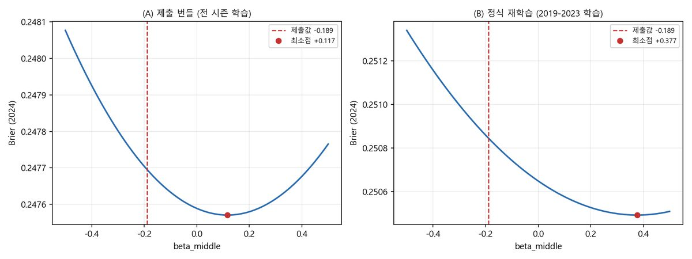

LG Aimers · 학습코드 재현 검증
제구 성공 확률 예측 모델과, 제출 코드의 상수 12건을 학습 데이터만으로 전수 재현한 검증 보고서
- 제출한 뒤, 코드 안의 상수가 정말 학습 데이터에서 나온 것인지 스스로 증명해야 하는 상황이 됐습니다. 모델은 다시 돌릴 수 없었습니다.
- LightGBM이 남기는 잎별 학습 행 수로 평균 예측을 역산해, 피처 행렬 없이 상수를 검증하는 방법을 찾았습니다.
- 12건 중 8건을 오차 0.0으로 재현했고, 재현하지 못한 2건은 숨기지 않고 보고서 맨 앞에 올렸습니다.


문제 🤔
모델을 다시 돌릴 수 없는 조건에서 상수 12건의 출처를 밝혀야 했습니다. 제출 번들에는 학습된 모델만 있고 피처 행렬은 없었습니다.
접근 🛠
- LightGBM 모델 텍스트의 잎별 학습 행 수로 평균 예측을 역산해, 피처 행렬 없이 모델을 다시 돌리지 않고 검증할 수 있게 했습니다.
- 드리프트 로짓·투영 비율 등 주요 상수를
16자리 오차 0.0으로 재현했습니다. - 연쇄 분해 구조를 곱 검정으로 확정했습니다 —
0.651402 × 0.794416 = 0.517485가 단독 모델 4종(0.5183~0.5186)과 일치. - 재현되지 않은 상수 2건은 6개 규약 조합을 전부 시도한 뒤 재현 불가로 명시했습니다.
- 홀드아웃이 무작위 행 분할이라 시간적 분리가 없었다는 방법론적 한계를 자진 신고했습니다.
결과 📈
상수 12건 중 8건 완전 해소, 2건 부분 해소, 재현 불가 2건을 먼저 드러냈습니다. 라벨 역산 일치율은 1.000000이었고, 결측 792건이 투수 수 792명과 정확히 일치해 구조가 확인됐습니다.
금융 직무와의 연결 🎯
- 모델 검증 문서화 — 상수 12건의 출처를 전수 재현하고 근거를 문서로 남겼습니다. 은행 MRM 조직이 하는 일과 같은 작업입니다.
- 재현 가능성 확보 — 의존성 없이 심사가 그 자리에서 돌릴 수 있는 검증 스크립트를 만들었습니다.
- 데이터 누수 · 시간 분리 점검 — 홀드아웃에 시간적 분리가 없다는 방법론적 한계를 스스로 신고했습니다.
막혔던 지점과 그때의 판단 🚩
모델을 다시 돌리지 않고 검증하는 방법을 찾았다
LightGBM은 모델을 텍스트로 저장할 때 잎마다 그 잎에 떨어진 학습 행 수를 남깁니다. 이걸 가중치로 써서 학습 데이터에서의 평균 예측을 정확히 계산했습니다. 의존성도 없고 심사가 그 자리에서 실행할 수 있습니다.
부호가 반대인 상수를 끝까지 재현하지 못했다
제출값 beta_middle = −0.189를 6개 규약 조합 전부로 재현해 봤지만 모든 조합에서 Brier 최소점이 양수였습니다. "모델 내부 계수는 전부 학습 데이터에서 적합했다"는 발표 문장을 유지할 수 없었습니다. 보고서 맨 앞에 이 사실을 올렸습니다.
더 자세히
관심 있는 항목만 펼쳐 보세요.
이 프로젝트가 시작된 배경
야구 투구 데이터에서 제구 성공 확률을 예측하는 과제였습니다. 평가는 Brier Score 기반이고 Score = 100000 × BSS, 운영진 베이스라인이 549.51점이었습니다. 제출 이후, 제출 코드의 모든 상수가 학습 데이터에서 적합된 것인지를 스스로 증명해야 하는 상황이 됐습니다.
설계 결정과 근거 2
의존성 없는 검증 스크립트를 만들었다
심사가 그 자리에서 실행할 수 있어야 의미가 있습니다. 모델 텍스트만 읽는 방식이라 표준 라이브러리만으로 돌아갑니다.
빼야 하는 주장에 대체재를 같이 준비했다
beta_middle을 발표에서 빼면 메시지에 구멍이 납니다. 그 자리에 오차 0.0으로 재현된 드리프트 투영을 넣었습니다. 같은 메시지가 되고, 그건 실제로 참입니다.
데이터
막혔던 지점 더 보기 2
폴백 상수 0.882의 정체를 밝혔다
코드에 있던 0.882가 어디서 나왔는지 아무도 몰랐습니다. 전체 데이터 비율은 0.8908이라 맞지 않았는데, 2024 시즌만 계산하니 0.881621이었습니다. 세 자리로 반올림한 리터럴이었고, 그 반올림값으로 계산해야만 잔차 2.5e-11로 재현됐습니다.
홀드아웃에 시간적 분리가 없다는 걸 스스로 신고했다
학습행 1,253,992 / 전체 1,475,092 = 0.8501. 2019–2023 전량이 1,221,585이므로 최소 32,407행의 2024 데이터가 학습에 들어갔습니다. 시즌을 가로지르는 무작위 행 분할이라 같은 투수의 투구가 학습과 홀드아웃에 섞여 있습니다. 규정 위반은 아니지만 방법론적 한계라 먼저 밝혔습니다.
이 결과가 틀렸을 수 있는 지점
- 상수 2건(
MIDDLE_MEAN,beta_middle)은 끝내 재현하지 못했습니다. - 홀드아웃이 시간 분리가 아닌 무작위 행 분할이라 2025년 예측 성능을 그대로 대변하지 못합니다.
금융 직무 연결 더 보기
- 규제 대응 커뮤니케이션 — 자진신고 3건을 먼저 선언하고 들어가는 소명 문서를 작성했습니다.
회고
모델 성능보다 모델을 설명할 수 있는가가 심사대에서 결정적이라는 걸 배웠습니다. 금융권의 모델 리스크 관리도 같은 질문을 합니다.